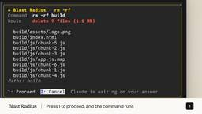
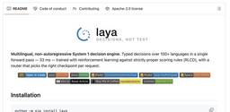
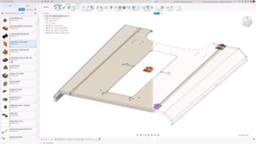
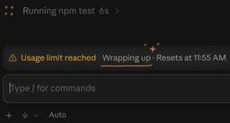

直近1週間の人気フィード
はてなブックマーク数を元に新着優先で並べ替え


Apple、macOSの「フルディスクアクセス」に追加の制御を導入へ 「AIエージェントの進化でリスクが大幅に増大」 69ITmedia AI＋ 最新記事一覧
69ITmedia AI＋ 最新記事一覧
Appleは、macOSの「フルディスクアクセス」権限の付与手順を厳格化する方針を発表した。AIエージェントの自律化に伴うデータ流出リスクを抑えるため、明示的な操作や追加制御を導入する。背景にはMetaのAIエージェント「Muse」を巡るメッセージデータ監視の議論などがある。
14時間前
新Kindle 計6モデル発売 頁めくりリモコンKindle Click、物理ボタンつきカバーも 106 テクノエッジ TechnoEdge
Amazonが電子書籍リーダーKindleのラインナップを更新しました。
2日前
Codex Security ・ Claude Security 入門 83 npaka
npaka
「Codex Security」と「Claude Security」を使って、AIで自社サービスの脆弱性を発見・検証する方法を簡単にまとめました。続きをみる
3日前

国産AI「LLM-jp-4」ベースのAIモデル、KDDI傘下のELYZAが無料公開 45ITmedia AI＋ 最新記事一覧
KDDIグループのAI開発企業ELYZAは、AIモデル「ELYZA-Thinking-1.0-llm-jp-4-33b」および「ELYZA-Thinking-1.0-llm-jp-4-32b-a3b」を発表した。国立情報学研究所が開発したオープンなAIモデル「LLM-jp-4」シリーズをベースに事後学習を実施し、性能を強化したという。
1日前

Mac・DGX SparkでLLM推論を最大3倍高速化する「TensorFold」の概要 29 npaka
Mac・DGX SparkでLLM推論を最大3倍高速化する「TensorFold」の概要をまとめました。続きをみる
2日前

Qwen3.8-27Bの精度98%を維持しつつ9倍小型化しiPhoneでも動く「Bonsai-2-27B」など生成AI技術5つを解説（生成AIウィークリー） 27 テクノエッジ TechnoEdge
「生成AIウィークリー」（第161回）は、高度な画像編集ができるオープンウェイトな画像生成AI「Qwen-Image-2.1」や、XiaomiのオープンソースAIモデル「MiMo-V2.6」を取り上げます。
1日前

Claude Codeが拡張機能「mod」対応、UIや動作をカスタマイズ。Claude書かせて作成も 24 テクノエッジ TechnoEdge
Anthropicが、AIコーディングツール「Claude Code」の外観や動作をユーザーの好みで拡張できる新機能「mod」を公開しました。
1日前

Google、「Gemini 4 Pro」ではなく「Gemini 4 Argon」発表 まずはサイバー防御組織に限定提供、出力上限は100万トークンに 40ITmedia AI＋ 最新記事一覧
Googleは、次世代フロンティアモデル「Gemini 4 Argon」を発表した。最大出力100万トークンに対応し、長時間に及ぶ業務処理や自律的なサイバー脆弱性修正に強みを持つ。安全対策を強化した上で、まずは信頼できるサイバー防御組織に先行提供し、有料APIなどで順次拡大する。
2日前

OpenAI、推論過程を狙った組織的な“蒸留”行為を阻止 「Kimi」開発元の関係者が関与と主張 32ITmedia AI＋ 最新記事一覧
OpenAIは、モデルの推論過程を抜き出す組織的な“敵対的蒸留”を特定し、阻止したと発表した。活動の中核には中国Moonshot AIの関係者が関与したと分析。暗号化された推論を悪用する新たな手口に対し、アカウント停止や推論保護の強化を実施し、業界や政府機関との脅威情報共有を進めている。
2日前

ChatGPTにAIでバーチャル試着機能とカメラでの書類スキャン→PDF化機能 17ITmedia AI＋ 最新記事一覧
OpenAIは、ChatGPTにバーチャル試着やお気に入り保存などの新機能を追加した。商品情報カードから自身の写真を使って服やアクセサリーを着用した姿を生成できる。気になった商品の整理機能も備える。また、iOSアプリに、連続撮影した書類を自動で1つのPDFにまとめて送信できるスキャン機能も導入した。
2日前
100年前の歌もAI超解像できる？ 東京大学猿渡研「Sidon」で始めるAI歌声超解像（CloseBox） 15 テクノエッジ TechnoEdge
生成AI技術を使って、古い写真を高精細にすることはできています。動画にすることすらできます。でも、音は？ それを可能にする技術が、ある程度可能になったというお話です。
2日前

「Gemini 4 Argon」とは 性能評価にみるAstra／Fable／Opusとの違い 一般提供は年内？
13ITmedia AI＋ 最新記事一覧
Googleが新AIモデル「Gemini 4 Argon」を発表。自社評価ではAstraやFable 5.1、Opus 5.5を多くの項目で上回るとうたう。当面はサイバー防御組織などに限定提供し、一般提供は「できるだけ早く」とする。
1日前

Microsoft、初のストリーミング文字起こしモデル「MAI-Transcribe-2-Streaming」公開 音声合成「MAI-Voice-2.1」と高速版も 10ITmedia AI＋ 最新記事一覧
Microsoft AIは、ストリーミング文字起こしモデル「MAI-Transcribe-2-Streaming」と音声合成モデル群を発表した。低遅延な逐次認識や声のトーンを保った多言語合成に対応し、音声エージェント構築を想定する。Microsoft Foundryでプレビュー提供を始め、複合デモも公開した。
2日前

人間は「取締役2人だけ」 実務をAIが担う新会社、セキュリティサービスのHENNGE 17
ITmedia AI＋ 最新記事一覧
セキュリティサービスなどを手掛けるHENNGEは、AI活用におけるガバナンス・コスト管理を支援する新会社「HENNGE AI」を設立したと発表した。人間の従業員は取締役の2人を除いて配置せず、自律的にタスクをこなすAIエージェントが実務を担う。
2日前
Google、新フロンティアモデルGemini 4 Argon発表 出力100万トークンで長期の自律推論に強み、法務や業務自動化でOpus 5.5やAstraに大差 16 テクノエッジ TechnoEdge
Google が新たなフロンティアAIモデル Gemini 4 Argon を発表しました。
3日前

新種の“判断だけAI”が無料で使える「Laya」がオープンソースで登場。Jevの約7.8倍高速（生成AIクローズアップ） 17 テクノエッジ TechnoEdge
今回は、文章を生成せず判断だけする、オープンソースの意思決定AIモデル「Laya」を取り上げます。インドのAI企業Convai Innovationsが開発しました。
4日前
Amazon、データセンター批判に反論 10億ドル超の地域支援策も発表 3ITmedia AI＋ 最新記事一覧
AWSのマット・ガーマンCEOは、データセンター建設批判に反論する声明を出した。水資源枯渇などの懸念を「迷信”と否定しつつ、電力料金負担や自治体とのNDA撤廃を含む行動指針を発表。さらに地域支援として、資格取得や省エネ改修などを助成する10億ドル超の基金を立ち上げる。
6時間前

Meta、AIエージェント「Muse」とつながる自作ガジェット向けSDKをオープンソースで公開 「Raspberry Pi」などに対応 3ITmedia AI＋ 最新記事一覧
Metaは、パーソナルAI「Muse」と連携するガジェットを自作できるプロジェクト「Muse Gadgets」を発表した。ESP32やRaspberry Pi向けSDKをGitHubでオープンソース公開。自作機器や家電と連携させる専用デバイス「Muse Home Link」も米国の有料会員向けに無償提供する。
13時間前
「Claude」3倍高速化の裏で、Anthropic開発者が「あえてしなかったこと」：899th Lap 4 ITmedia AI＋ 最新記事一覧
ITmedia AI＋ 最新記事一覧
「2週間で約3倍高速化」という驚きの成果を上げたClaude。いったい、Anthropicの開発者たちは何を変えたのか。短期間での高速化を支えたのは、ある開発アプローチだった。
2日前

Amazon 新 Fire TV Stick 4K発売 電源アダプタ不要のスリム設計で高速化、新デザインの改良型リモコンも 12 テクノエッジ TechnoEdge
Amazonは9月30日、ストリーミングメディアプレーヤーの新モデル「Fire TV Stick 4K」を発売しました。価格は11,980円（税込)。
3日前

スマホがなくてもAIが使える「AI-eSIM」 スマートグラスやペットロボットを変える新たな仕組みとは (山根康宏) 3 テクノエッジ TechnoEdge
AI-eSIMは端末認証とクラウドAIを一体化し、スマートグラス等のAIデバイスを単体接続・活用可能にする小型チップで、AI-IoT普及を加速する。
2日前

Gemini 4 Argon の概要 4 npaka
「Gemini 4 Argon」の概要について簡単にまとめました。・Gemini 4 Argon: our next era of frontier intelligence続きをみる
3日前
引退した人型ロボ、“溶けた鋼の海”に沈む アーノルド・シュワルツェネッガー氏が提案 米企業が動画公開 3ITmedia AI＋ 最新記事一覧
引退した人型ロボットが“溶けた鋼の海”に沈む――ロボット開発企業の米Figureは、こんな動画を公開した。同社のブレット・アドコックCEOと俳優のアーノルド・シュワルツェネッガー氏のやりとりがきっかけになったという。
2日前

Autodesk、FusionなどのAI機能を発表 設計作業の自動化や設計資産の再利用を支援 3 ITmedia AI＋ 最新記事一覧
ITmedia AI＋ 最新記事一覧
Autodeskは「Autodesk University 2026（AU 2026）」において、「Fusion」「Inventor」「Vault」およびPLMに関する新たなAI機能や取り組みを発表した。部品の編集や組み立て、製造工程の自動化に加え、製品情報の連携や既存の設計資産の再利用を支援する。
3日前

Claude Codeがもうひと踏ん張りする新機能、5時間制限に達してもキリの良いところまで継続 21 テクノエッジ TechnoEdge
Anthropic が Claude サブスクユーザー向けに「キリの良いところまで続ける」新機能を追加しました。
6日前
話しかけて6秒で、彼女が口を動かして返事する。LTX-2.5高速化技術で、動画生成リップシンクアバターがようやく「会話」になった（CloseBox） 7 テクノエッジ TechnoEdge
13年前に他界した妻と対話するシステムについて、何度かこの連載で取り上げてきました。
5日前